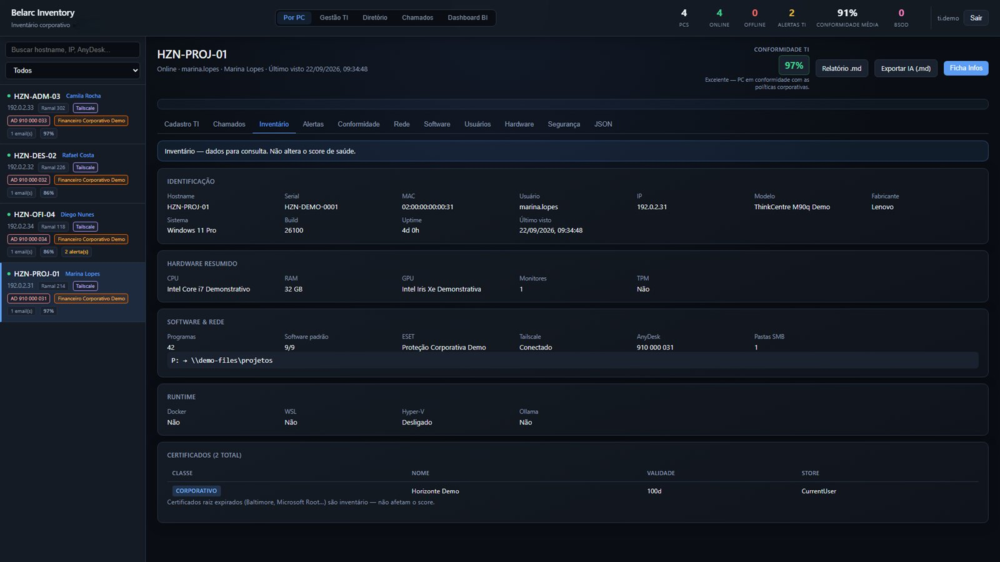
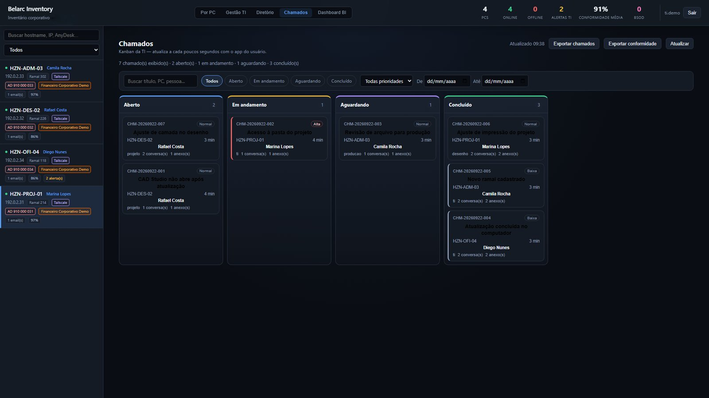
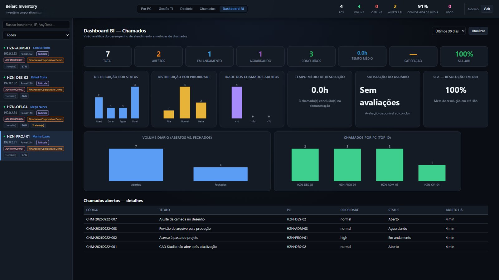
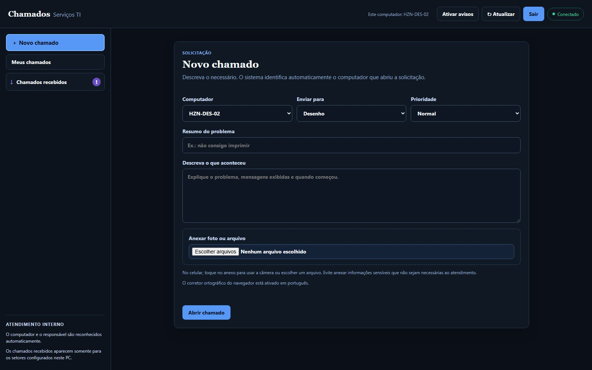
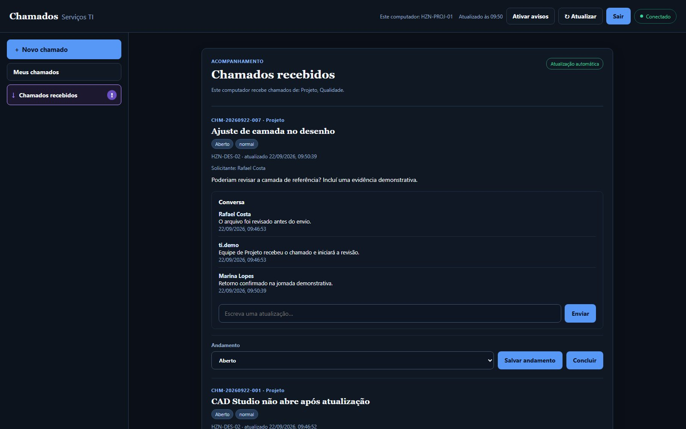

Problema
Durante suporte e auditoria, descobrir hardware, software, responsável, riscos, certificados e histórico exigia consultar fontes diferentes ou depender de memória operacional.
SISTEMAS DISTRIBUÍDOS · WINDOWS · OPERAÇÃO DE TI
EM USO INTERNOInventário contínuo, agente Windows e chamados com contexto técnico
Co-desenvolvi um sistema interno que mantém inventário, saúde técnica, responsáveis e chamados ligados ao computador correto, reduzindo conferências manuais durante suporte, manutenção e auditoria.

TELAS DO SISTEMA





Uso real
O sistema está rodando na empresa atual; o material público troca nomes, endereços e dados internos por cenários fictícios.
Não é IA
O “agente” é um serviço Windows em Rust que coleta e sincroniza dados. O projeto não é apresentado como agente LLM ou RAG.
Durante suporte e auditoria, descobrir hardware, software, responsável, riscos, certificados e histórico exigia consultar fontes diferentes ou depender de memória operacional.
O agente Rust executa coletores PowerShell/CIM, mantém cache local e envia mudanças ao servidor Axum/SQLite por HTTP interno com token. TI, solicitantes e setores recebem interfaces diferentes conforme o papel.
O agente trabalha com store-and-forward quando o servidor fica indisponível, usa matrícula temporária para novos agentes e mantém o sistema restrito a LAN/VPN privada, sem expor inventário na internet.
Limite intencional
O servidor é destinado a LAN/VPN privada. Tokens, bancos, logs, anexos e dados coletados reais não entram no repositório público.
Qualidade pública
O repositório oferece smoke test isolado, cargo fmt, clippy, cargo test e validação da árvore pública antes de publicação.
Este case mostra uma versão pública sanitizada do sistema real, com dados fictícios e sem credenciais, endereços internos ou inventário corporativo.